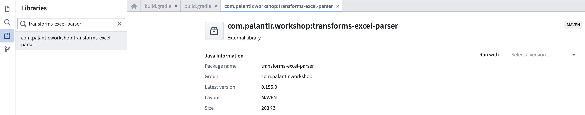
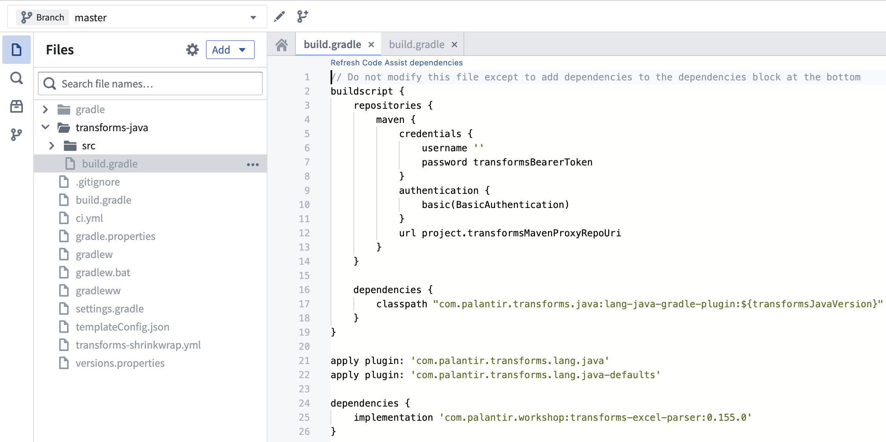

There are many ways to extract tabular data from a schemaless dataset containing Microsoft Excel files in Foundry, including Pipeline Builder, Python file-based transforms using open-source libraries like openpyxl â, and Java file-based transforms using open-source libraries like Apache POI â.
In addition to these options, Palantir provides a library called transforms-excel-parser, which wraps Apache POI with sensible default behavior to make it easy to use in a transforms-java repository with minimal configuration.
Some examples of the useful features and behavior provided by this library include the following:
errorDataframe() method on the ParseResult class, which can be checked at runtime to fail a job or alternatively written to a separate output and checked asynchronously.:::callout{theme="neutral" title="Spreadsheet" media sets} For source of truth workflows and unstructured excel files, see spreadsheet media sets. :::
Search for transforms-excel-parser in the repository's Maven library panel.

Select the latest version available.
This will show a dialog for importing transforms-excel-parser-bundle as an additional backing repository. Select "Add library".

:::callout{theme="neutral"}
You may see eddie-spark-module-bundle and/or ri.eddie.artifacts.repository.bundles in addition to transforms-excel-parser-bundle as dropdown options.
The backing repositories with eddie in their name are intended for the exclusive use of the Pipeline Builder application, so they are not the appropriate choice, and using them may lead to issues in the future.
If you do not see transforms-excel-parser-bundle as an option, contact your Palantir representative for installation.
:::
Add the latest version available to your transforms-java/build.gradle file as below.

:::callout{theme="neutral"}
transforms-java/build.gradle is a hidden file, so you will need to toggle the Show hidden files setting in order to see it.
:::
For detailed API documentation, download the javadoc archive, unzip it, and view the contained HTML files in a web browser.
The best place to start when reading the javadoc is com/palantir/transforms/excel/package-summary.html.
The following file formats are currently supported:
Note that xlsb files are not currently supported.
When running Code Assist preview, you may observe an issue where the first run after workspace startup succeeds and the second run fails with an error similar to the below:
java.lang.ClassCastException: class com.palantir.transforms.excel.KeyedParsedRecord cannot be cast to class com.palantir.transforms.excel.KeyedParsedRecord (com.palantir.transforms.excel.KeyedParsedRecord is in unnamed module of loader java.net.URLClassLoader @5a5d825a; com.palantir.transforms.excel.KeyedParsedRecord is in unnamed module of loader java.net.URLClassLoader @53dafc50)
This issue is exclusive to the Code Assist preview functionality and does not lead to issues at build time. Refreshing your browser window should allow you to preview again without performing a full Code Assist workspace rebuild.
The Apache POI library is known for its high memory consumption, which means that even relatively small Excel files can result in a considerable memory footprint when opened. As a result, it is common for default transform Spark profile settings to provide insufficient memory-per-task to accommodate the in-memory objects. Insufficient memory can result in the following issues:
Spark module '{module_rid}' died while job '{job_rid}' was using it.A rough guideline for identifying if a job is stalling is whether it takes more than 10 minutes to process a single file, since given sufficient memory, a very large Excel file can take about 8 minutes to process. Note that a single Spark task can process multiple input files, so it is not always straightforward to apply this rule.
Whether the symptom of insufficient memory is job failure or job stalling, it is advisable to resolve the issue by switching to a spark profile combination that provides more memory per task, such as EXECUTOR_MEMORY_LARGE and EXECUTOR_CORES_EXTRA_SMALL.
package myproject.datasets;
import com.palantir.transforms.excel.ParseResult;
import com.palantir.transforms.excel.Parser;
import com.palantir.transforms.excel.TransformsExcelParser;
import com.palantir.transforms.excel.table.SimpleHeaderExtractor;
import com.palantir.transforms.excel.table.TableParser;
import com.palantir.transforms.lang.java.api.Compute;
import com.palantir.transforms.lang.java.api.FoundryInput;
import com.palantir.transforms.lang.java.api.FoundryOutput;
import com.palantir.transforms.lang.java.api.Input;
import com.palantir.transforms.lang.java.api.Output;
import java.util.Optional;
import org.apache.spark.sql.Dataset;
import org.apache.spark.sql.Row;
public final class SimpleTabularExcel {
@Compute
public void myComputeFunction(
@Input("<input_dataset_rid>") FoundryInput myInput,
@Output("<output_dataset_rid>") FoundryOutput myOutput,
@Output("<error_output_dataset_rid>") FoundryOutput errorOutput
) {
// Create a TableParser with an appropriately configured SimpleHeaderExtractor
// In this example, the header of the file is on the second row.
// If the header were on the first row, we would not need to
// specify rowsToSkip, since the default value is 0, and in fact
// we could just do TableParser.builder().build() in that case.
Parser tableParser = TableParser.builder()
.headerExtractor(
SimpleHeaderExtractor.builder().rowsToSkip(1).build())
.build();
// Create a TransformsExcelParser with the TableParser
TransformsExcelParser transformsParser = TransformsExcelParser.of(tableParser);
// Parse input
ParseResult result =
transformsParser.parse(myInput.asFiles().getFileSystem().filesAsDataset());
// Get the parsed data, which may be empty if there were no rows in the input
// or an error occurred
Optional<Dataset<Row>> maybeDf = result.singleResult();
// If parsed data is not empty, write it to the output dataset
maybeDf.ifPresent(df -> myOutput.getDataFrameWriter(df).write());
// Write error information to the error output
errorOutput.getDataFrameWriter(result.errorDataframe()).write();
}
}
package myproject.datasets;
import com.palantir.transforms.excel.ParseResult;
import com.palantir.transforms.excel.Parser;
import com.palantir.transforms.excel.TransformsExcelParser;
import com.palantir.transforms.excel.table.MultilayerMergedHeaderExtractor;
import com.palantir.transforms.excel.table.TableParser;
import com.palantir.transforms.lang.java.api.Compute;
import com.palantir.transforms.lang.java.api.FoundryInput;
import com.palantir.transforms.lang.java.api.FoundryOutput;
import com.palantir.transforms.lang.java.api.Input;
import com.palantir.transforms.lang.java.api.Output;
import java.util.Optional;
import org.apache.spark.sql.Dataset;
import org.apache.spark.sql.Row;
public final class ComplexHeaderExcel {
@Compute
public void myComputeFunction(
@Input("<input_dataset_rid>") FoundryInput myInput,
@Output("<output_dataset_rid>") FoundryOutput myOutput,
@Output("<error_output_dataset_rid>") FoundryOutput errorOutput
) {
// Create a TableParser with a MultilayerMergedHeaderExtractor
Parser tableParser = TableParser.builder()
.headerExtractor(MultilayerMergedHeaderExtractor.builder()
.topLeftCellName("A1")
.bottomRightCellName("D2")
.build())
.build();
// Create a TransformsExcelParser with the TableParser
TransformsExcelParser transformsParser = TransformsExcelParser.of(tableParser);
// Parse input
ParseResult result =
transformsParser.parse(myInput.asFiles().getFileSystem().filesAsDataset());
// Get the parsed data, which may be empty if there were no rows in the input
// or an error occurred
Optional<Dataset<Row>> maybeDf = result.singleResult();
// If parsed data is not empty, write it to the output dataset
maybeDf.ifPresent(df -> myOutput.getDataFrameWriter(df).write());
// Write error information to the error output
errorOutput.getDataFrameWriter(result.errorDataframe()).write();
}
}
In this example, we register multiple FormParser instances, but it is also possible to register a mix of FormParser and TableParser instances, and that is a common pattern with complex forms that include tabular elements (within the same sheet or across sheets).
package myproject.datasets;
import com.palantir.transforms.excel.TransformsExcelParser;
import com.palantir.transforms.excel.ParseResult;
import com.palantir.transforms.excel.Parser;
import com.palantir.transforms.excel.form.FieldSpec;
import com.palantir.transforms.excel.form.FormParser;
import com.palantir.transforms.excel.form.Location;
import com.palantir.transforms.excel.form.cellvalue.AdjacentCellAssertion;
import com.palantir.transforms.excel.form.cellvalue.CellValue;
import com.palantir.transforms.excel.functions.RegexSubstringMatchingSheetSelector;
import com.palantir.transforms.lang.java.api.Compute;
import com.palantir.transforms.lang.java.api.FoundryInput;
import com.palantir.transforms.lang.java.api.FoundryOutput;
import com.palantir.transforms.lang.java.api.Input;
import com.palantir.transforms.lang.java.api.Output;
public final class FormStyleExcel {
private static final String FORM_A_KEY = "FORM_A";
private static final String FORM_B_KEY = "FORM_B";
@Compute
public void myComputeFunction(
@Input("<input_dataset_rid") FoundryInput myInput,
@Output("<form_a_output_dataset_rid>") FoundryOutput formAOutput,
@Output("<form_b_output_dataset_rid>") FoundryOutput formBOutput,
@Output("<error_output_dataset_rid>") FoundryOutput errorOutput) {
// Form A parser configuration
Parser formAParser = FormParser.builder()
.sheetSelector(new RegexSubstringMatchingSheetSelector("Form_A"))
.addFieldSpecs(createFieldSpec("form_a_field_1", "B1"))
.addFieldSpecs(createFieldSpec("form_a_field_2", "B2"))
.build();
// Form B parser configuration
Parser formBParser = FormParser.builder()
.sheetSelector(new RegexSubstringMatchingSheetSelector("Form_B"))
.addFieldSpecs(createFieldSpec("form_b_field_1", "B1"))
.addFieldSpecs(createFieldSpec("form_b_field_2", "B2"))
.build();
// TransformsExcelParser with both Form A and Form B parsers
TransformsExcelParser transformsParser = TransformsExcelParser.builder()
.putKeyToParser(FORM_A_KEY, formAParser)
.putKeyToParser(FORM_B_KEY, formBParser)
.build();
// Parse input
ParseResult result =
transformsParser.parse(myInput.asFiles().getFileSystem().filesAsDataset());
// Write parsed data to the output datasets
result.dataframeForKey(FORM_A_KEY)
.ifPresent(df -> formAOutput.getDataFrameWriter(df).write());
result.dataframeForKey(FORM_B_KEY)
.ifPresent(df -> formBOutput.getDataFrameWriter(df).write());
// Write error information to the error output
errorOutput.getDataFrameWriter(result.errorDataframe()).write();
}
// Helper method to concisely create a FieldSpec with an appropriate assertion
private static FieldSpec createFieldSpec(String fieldName, String cellLocation) {
return FieldSpec.of(
fieldName,
CellValue.builder()
.addAssertions(AdjacentCellAssertion.left(1, fieldName))
.location(Location.of(cellLocation))
.build());
}
}
package myproject.datasets;
import com.palantir.transforms.excel.ParseResult;
import com.palantir.transforms.excel.Parser;
import com.palantir.transforms.excel.TransformsExcelParser;
import com.palantir.transforms.excel.functions.RegexSubstringMatchingSheetSelector;
import com.palantir.transforms.excel.table.CaseNormalizationOption;
import com.palantir.transforms.excel.table.SimpleHeaderExtractor;
import com.palantir.transforms.excel.table.TableParser;
import com.palantir.transforms.excel.utils.IncrementalUtils;
import com.palantir.transforms.lang.java.api.*;
public final class IncrementalTransform {
@Compute
public void myComputeFunction(
@Input("<input_dataset_rid>") FoundryInput myInput,
@Output("<sheet_1_output_dataset_rid>") FoundryOutput sheet1Output,
@Output("<sheet_2_output_dataset_rid>") FoundryOutput sheet2Output) {
// Define the parsers
// Specifying either CONVERT_TO_LOWERCASE or CONVERT_TO_UPPERCASE for a
// CaseNormalizationOption is especially important with incremental processing
// to avoid subtle issues due to inconsistent casing between input files across
// incremental batches.
Parser sheet1Parser = TableParser.builder()
.headerExtractor(SimpleHeaderExtractor.builder()
.caseNormalizationOption(CaseNormalizationOption.CONVERT_TO_LOWERCASE).build())
.sheetSelector(new RegexSubstringMatchingSheetSelector("Sheet1")).build();
Parser sheet2Parser = TableParser.builder()
.headerExtractor(SimpleHeaderExtractor.builder()
.caseNormalizationOption(CaseNormalizationOption.CONVERT_TO_LOWERCASE).build())
.sheetSelector(new RegexSubstringMatchingSheetSelector("Sheet2")).build();
TransformsExcelParser transformsParser = TransformsExcelParser.builder().putKeyToParser("Sheet1", sheet1Parser)
.putKeyToParser("Sheet2", sheet2Parser).build();
// Parse the data
FoundryFiles foundryFiles = myInput.asFiles();
ParseResult result = transformsParser.parse(foundryFiles.getFileSystem(ReadRange.UNPROCESSED).filesAsDataset());
// Check for errors and fail fast
// With incremental processing in particular, it is often better to fail fast
// instead of writing the error dataframe to a separate output and
// checking it asynchronously. If failing fast is not an option and you
// adopt the "write error dataframe to separate output" approach, note
// that you will need to either â re-upload files that had parse errors to the input dataset
// or â¡ force a snapshot build of this transform via a manual dummy transaction
// on one of the output datasets in order to trigger the reprocessing of the
// files that had parse errors.
if (result.errorDataframe().count() > 0) {
throw new RuntimeException("Errors: " + result.errorDataframe().collectAsList().toString());
}
// Write parsed data incrementally to the outputs via an APPEND transaction if possible
// and a merge-and-replace SNAPSHOT transaction if not
// The below implementation assumes that it is normal and expected for a subset of the
// parsers to find no data in a given incremental batch of files. If that is not
// the case, you may want to raise an exception if a subset of the dataframes is
// absent and there were a non-zero number of unprocessed files in the input.
// An absent result does not necessarily mean that an error will be present
// in the error dataframe (for example, a SheetSelector returning an empty
// collection of sheets is not considered an error).
FilesModificationType filesModificationType = foundryFiles.modificationType();
result.dataframeForKey("Sheet1").ifPresent(
dataframe -> IncrementalUtils.writeAppendingIfPossible(filesModificationType, dataframe, sheet1Output));
result.dataframeForKey("Sheet2").ifPresent(
dataframe -> IncrementalUtils.writeAppendingIfPossible(filesModificationType, dataframe, sheet2Output));
}
}
Most of the configuration methods in the TableParser and FormParser builders, such as sheetSelector and headerExtractor, specify interfaces instead of classes in their argument signatures. Therefore, you can define custom implementations when the built-in implementations, such as RegexSubstringMatchingSheetSelector, SimpleHeaderExtractor, and MultilayerMergedHeaderExtractor, are not sufficient. Additionally, since most of these interfaces have only one method, you can usually use Java lambda expressions â when defining a custom implementation in this way.
For example, the built-in MultilayerMergedHeaderExtractor requires you to specify the top-left and bottom-right cell names statically. However, inconsistencies may exist between input files in the number of empty rows before the header begins. The example below shows how you can define a custom implementation of the HeaderExtractor interface that dynamically identifies the start of the header, uses that information to define a local instance of MultilayerMergedHeaderExtractor, and then returns the result of calling the local MultilayerMergedHeaderExtractor's extractHeader method.
Consult the API documentation for detailed definitions of HeaderExtractor and other interfaces.
package myproject.datasets;
import com.palantir.transforms.excel.ParseResult;
import com.palantir.transforms.excel.Parser;
import com.palantir.transforms.excel.TransformsExcelParser;
import com.palantir.transforms.excel.table.HeaderExtractor;
import com.palantir.transforms.excel.table.MultilayerMergedHeaderExtractor;
import com.palantir.transforms.excel.table.TableParser;
import com.palantir.transforms.excel.utils.WorkbookUtils;
import com.palantir.transforms.lang.java.api.*;
import org.apache.poi.ss.usermodel.Cell;
import org.apache.poi.ss.usermodel.Row;
import org.apache.poi.ss.usermodel.Sheet;
import org.apache.poi.ss.util.CellReference;
import org.apache.spark.sql.Dataset;
import java.util.Optional;
public class CustomHeaderExtractorUsageExample {
private static Optional<String> getFirstCellValue(Sheet sheet, int rowIndex) {
Row row = sheet.getRow(rowIndex);
if (row == null) {
return Optional.empty();
}
Cell cell = row.getCell(0);
if (cell == null) {
return Optional.empty();
}
String value = WorkbookUtils.getValueAsString(cell);
if (value == null) {
return Optional.empty();
}
return Optional.of(value);
}
@Compute
public void myComputeFunction(
@Input("<input_dataset_rid>>") FoundryInput myInput,
@Output("<output_dataset_rid>") FoundryOutput myOutput,
@Output("<error_output_dataset_rid>") FoundryOutput errorOutput
) {
HeaderExtractor headerExtractor = sheet -> {
int rowsInSheet = sheet.getLastRowNum();
Integer firstHeaderRow = null;
for (int currentRowIndex = 0; currentRowIndex < rowsInSheet; currentRowIndex += 1) {
Optional<String> firstCellValue = getFirstCellValue(sheet, currentRowIndex);
// Assume that we can always identify the start of the header by looking for the first row
// in which the value in the first cell is the string "record_id".
if (firstCellValue.isPresent() && firstCellValue.get().equals("record_id")) {
firstHeaderRow = currentRowIndex;
break;
}
}
if (firstHeaderRow == null) {
return Optional.empty();
}
// Assume that the height of the header is always two rows. We could implement
// additional logic to attempt to find the height on a per-file basis
// if that assumption were not valid.
int lastHeaderRow = firstHeaderRow + 1;
return MultilayerMergedHeaderExtractor
.builder()
.topLeftCellName(new CellReference(firstHeaderRow, 0).formatAsString())
// Assume that the width of the header is always five columns (the indices in the CellReference
// constructor are zero-indexed). We could implement additional logic to attempt to find
// the width on a per-file basis if that assumption were not valid.
.bottomRightCellName(new CellReference(lastHeaderRow, 4).formatAsString())
.build()
.extractHeader(sheet);
};
Parser tableParser = TableParser.builder()
.headerExtractor(headerExtractor)
.build();
TransformsExcelParser transformsParser = TransformsExcelParser.of(tableParser);
ParseResult result =
transformsParser.parse(myInput.asFiles().getFileSystem().filesAsDataset());
Optional<Dataset<org.apache.spark.sql.Row>> maybeDf = result.singleResult();
maybeDf.ifPresent(df -> myOutput.getDataFrameWriter(df).write());
errorOutput.getDataFrameWriter(result.errorDataframe()).write();
}
}